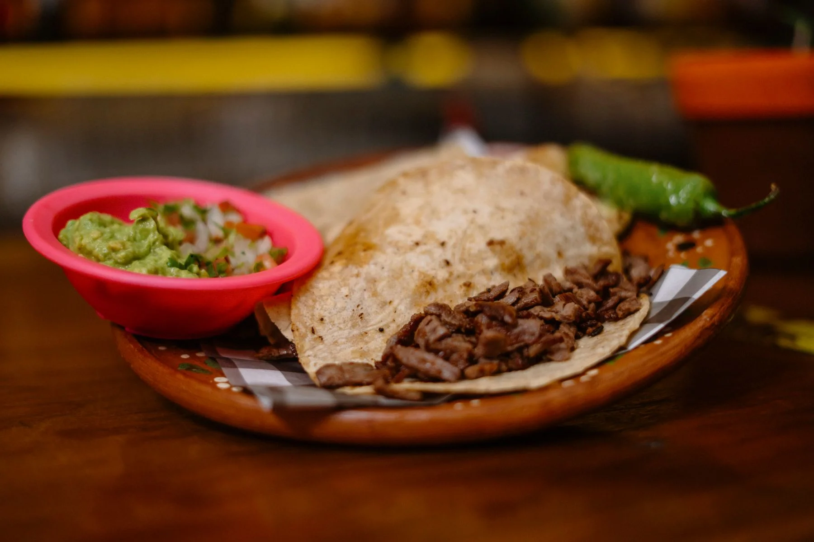
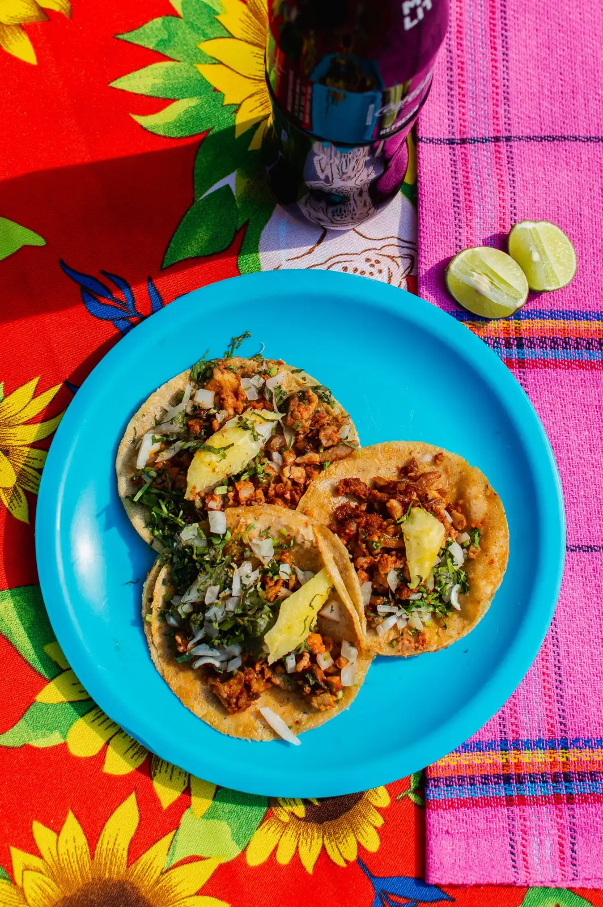

A neighborhood taquería · Los AngelesGood days.
Good days.
Messy tacos.
A little heat. A squeeze of lime.
And absolutely no need for a fork.
Tacos.
Salsa.
Repeat.
Salsa.
Repeat.
CORN TORTILLAS ✳ EXTRA LIME ✳ SALSA ON THE SIDE ✳ CORN TORTILLAS ✳ EXTRA LIME
Pull up a chair.
Pass the salsa.
Lunch with a friend. Dinner with the whole table. Start with tacos, add something cold, and leave room for one more.
No occasion neededYour lunch
Your lunch
plans? Sorted.
Keep it simple. Choose a filling, pick your salsa, and find a sunny seat.
Meet us in LA ↗
Before you come byA few good
A few good
questions.
Is there a meat-free option?
The sample menu includes a mushroom taco. Ask the restaurant about ingredients and shared cooking surfaces.
Can I order pickup here?
This is a design sample, so ordering is switched off. A real pickup menu would connect here.
What about food allergies?
Speak to the restaurant before ordering. Ingredients and preparation need to be confirmed.
Los Angeles, CaliforniaSee you
See you
around here.
Echo Park neighborhood
Sample hours: Tue–Sun, 11am–9pm
(555) 010-0123
Illustrative neighborhood map · not a business address